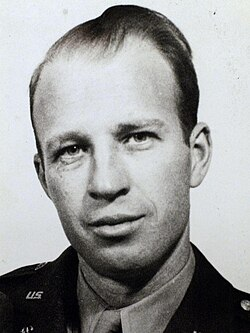

Frank Olson
Army scientist, 1910 to 1953

A Fort Detrick scientist who was secretly given LSD by the CIA in 1953 and died days later. 1
Open in the interactive Watcher
Related
Sources
- Frank Olson Wikipedia
Army scientist, 1910 to 1953

A Fort Detrick scientist who was secretly given LSD by the CIA in 1953 and died days later. 1
Open in the interactive Watcher